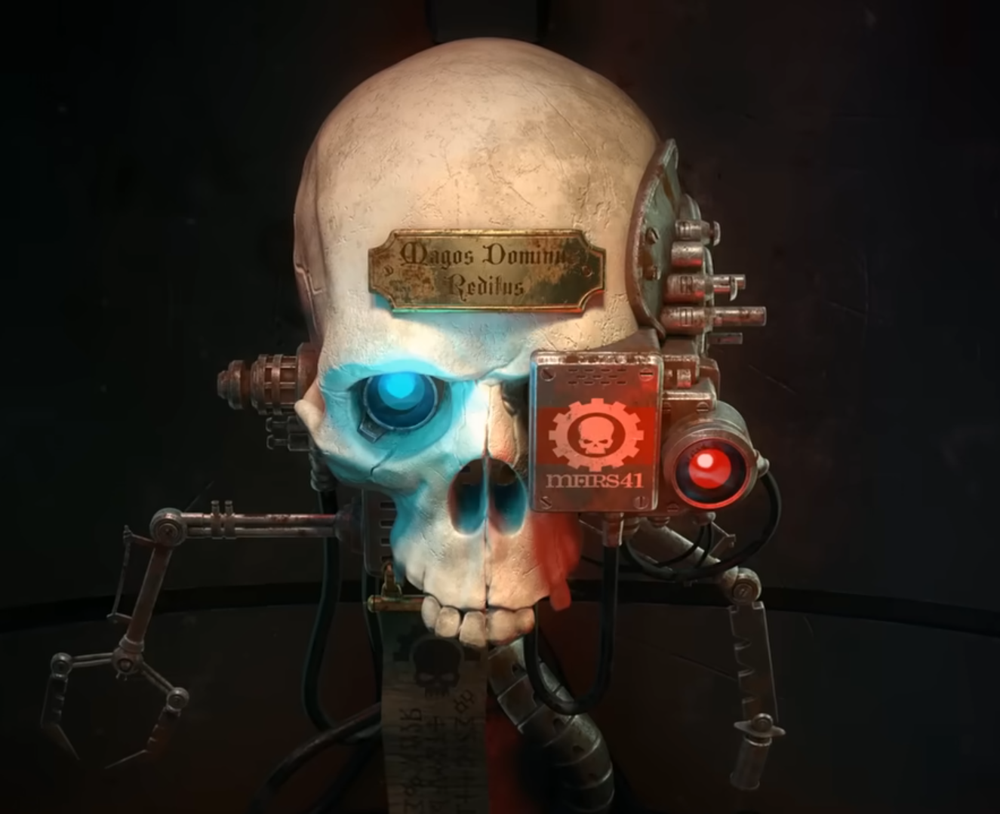

Warhammer Mechanicus is a AA, xcom like, turn based strategy game set in the Warhammer lore.
You command a squad of tech priests sent to a planet to clear out an alien race of necromances. The story is simple but feels very cool in the sense that you are role playing in the lore. You don't have to know much about Warhammer to enjoy it (I don't) but I think you'd also get more out of it if you did. It's interesting seeing how this faction of half / full robotic humans who serve a robot god interact with each other and which aspects of there personality they have chosen to retain. Like I say, the story isn't very deep but it does make you feel like you are part of that world.
The game is dripping in atmosphere and the music and sound design is great and really fits it. I like the little things like the computerised image of the necrons that flashes up on the screen before battle. It feels this game was done on a budget but in a good way. It almost feels like a board game.
The gameplay is pretty good, XCom-ish. You have a few tech-priests that you augment and remain with you throughout your journey, and Skiratii soliders that are disposable. I played on easy mode without much trouble but I could see how the game could get more difficult (and fun) played on a higher difficulty that forces you to use all abilites and tactics at your disposal.
The length of the game is fairly short for a game of this type. It took me 13 hours to complete which felt about right, didn't overstay its welcome. Though I will say the animations in combat are a little slow and can be a bit irritating when you have a bunch of actions you want to execute.
Also the trailer / intro movie is a banger.